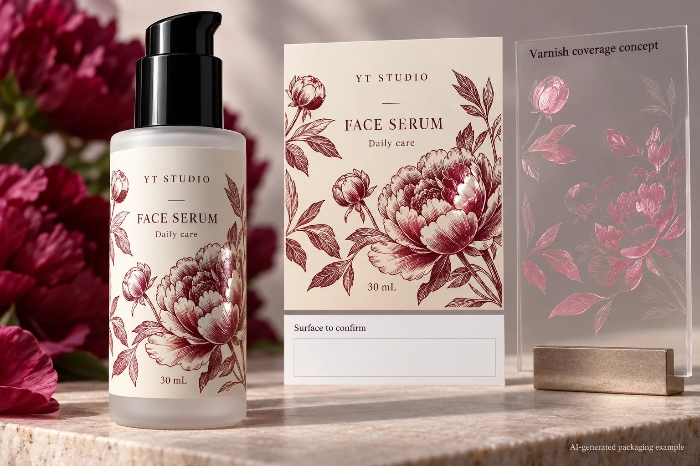
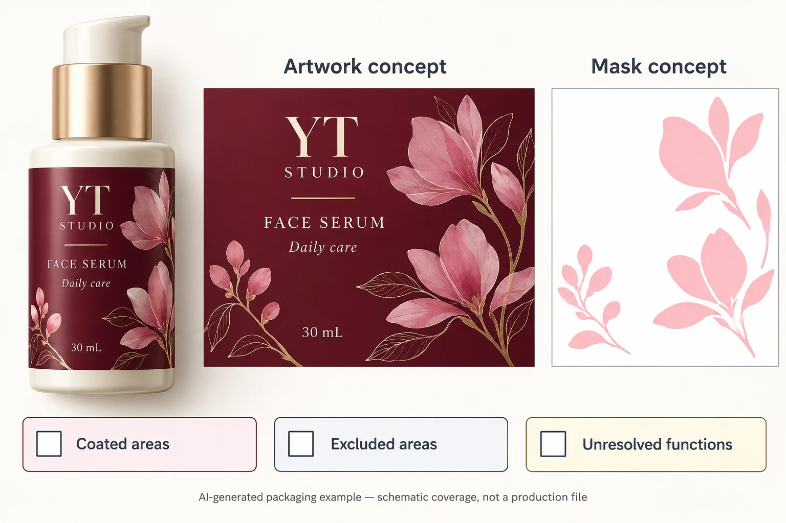

A serum label has an approved illustration and a request for gloss on the petals. The production file contains a varnish separation. The remaining question is whether that separation covers the intended petals, leaves the coding panel in the agreed condition and follows the printer's requirements at the edge of the label.
Approve a coverage map alongside the visible artwork. Name the areas to coat, the areas to exclude and the functions those regions must support. Then inspect the actual exported mask with prepress. A beautiful gloss effect in a mockup cannot establish where the production coating will land.

Separate the finish idea from its physical coverage
Start with the brand's visual intention. Is the proposal a decorative spot effect, an overall protective layer or a combination of treatments? Those descriptions can lead to different drawings and quotations. Do not let the single word varnish stand in for all three.
For a selective effect, mark the intended coated regions on the current artwork. Use stable names such as front petal cluster or product-name panel, with an identified revision. A note saying coat the artwork can be ambiguous when the file contains a background tint, transparent effects and technical objects as well as the decoration.
The existing finish discussions help compare material options. This guide assumes a selective coating proposal is being considered and asks which exact regions are being released. It gives no universal coating chemistry, film thickness or durability result.
Give functional areas their own decision
Identify any region that receives a later operation: variable coding, writing, another adhesive interface or another finishing step. Ask the responsible technical parties whether the proposed coating is included in the evidence for that function. A clear-looking area can still have a surface treatment.
The batch-code panel guide identifies the coding surface and operator. Attach that confirmed surface to the coverage map. Do not erase varnish over every code panel as a universal rule; have the converter and coding operator confirm the intended arrangement.
If a wrap overlaps itself, identify the actual receiving face at the seam. The overlap seam guide explains why that interface can need its own review. A local coating change can affect that question even when the label's face material stays the same.
The useful map therefore distinguishes three states: coat as proposed, exclude as agreed, or unresolved. An unresolved region should remain visible in the review record rather than being filled automatically to make a plate look complete.
Confirm the mask representation with prepress
Adobe explains that spot colours and special coatings can use additional separations in a production file. The preview colour that makes a varnish mask easy to see is an instruction representation; it is not the physical colour the coating will acquire.
Ask the receiving printer how it wants that separation supplied and named. Have the designer connect it to the same artwork revision, position and trim reference. Keep a composite view that shows the intended relationship and a mask-only view that makes the covered regions easy to inspect. The printer's requirements govern the actual file preparation.
Do not merge the technical mask into decorative artwork merely because the screen colours look similar. The spot-ink name guide handles channel identity; this coverage review determines what the agreed channel actually contains.
Inspect coverage on the actual export
| Region | Intent to record | Release question |
|---|---|---|
| Decorative feature | Named graphic and the desired selective effect | Does the mask include the intended shape? |
| Essential copy | Intended appearance and any finish constraint | Can the text still be reviewed on the finished construction? |
| Coding or writing panel | Supplier/operator-confirmed receiving surface | Is the map consistent with that functional surface? |
| Seam or another bond area | Identified contact and proposed finish | Does the interface evidence represent this treatment? |
| Trim and nearby details | Current dieline and receiving printer instructions | Does the coverage follow the agreed edge treatment? |
| Final mask | Export ID, separation name and reviewer | Is this the same file being released? |

Work from the region list before inspecting the mask. Toggle the technical separation with prepress and compare it with the composite design. Check missing islands, unintended filled regions, shifted shapes and the specific exclusions. A composite screenshot can help locate a comment, but it does not replace inspection of the actual output file.
Where a boundary needs a process allowance or registration tolerance, ask the printer to define it for the actual job. Do not copy a numeric inset from another supplier. If the brand-visible result needs a physical proof, agree what sample represents the coating and which feature it is intended to demonstrate.
Stop release if the mask revision differs from the artwork, a functional area is unresolved or the receiving party cannot identify the coating separation. Obtain a corrected export, inspect the affected regions again and have the printer acknowledge that file.
Let the simpler coverage option remain available
A hypothetical label uses one small decorative spot effect with no later coding over that area. A clear map and appropriate appearance sample may settle the design. Another project has dense small copy, an unqualified code surface and an overlap seam near the requested effect. That project has several interfaces to reconcile before the finish can be accepted.
The alternative may be a simpler selective region, a different supported treatment or an overall finish whose functional areas have been evaluated. Compare the actual visual and operational consequences with the converter. Do not assume the most intricate mask is the better purchase or that a visually simple coating is automatically production-ready.
For custom cosmetic labels, provide the container, finished label dimensions, quantity per design and current artwork. Include the marked coverage map, the mask file if available, and the confirmed requirements for coding, seams or other affected functions. Ask the printer to identify the proposed treatment and sample scope.
Use the inquiry form to prepare a message. Send the marked artwork and mask separately by email or WhatsApp; the form does not upload attachments. Release the exact coverage instruction that the brand and prepress team have both reviewed.
Sources: Adobe on colour separations describes additional coating separations. Hubergroup PRINTLAC information describes spot or full-area treatment for a specified varnish family. These references explain available concepts; they do not specify a YT production recipe or certify the example.